Your 9-5 pays the bills
6-10 Builds the Empire
It is always about the WHY not HOW?
Iska matlab hai ki bade sochne ka jadoo (magic) yeh hai ki humein hamesha "kyun" (WHY) pe focus karna chahiye, na ki "kaise" (HOW) pe. Yani, agar tum kuch bada achieve karna chahte ho, toh pehle yeh socho ki tum yeh kyun karna chahte ho, na ki yeh kaise hoga. WHY clear hone se motivation milti hai, aur HOW apne aap samajh aa jata hai.
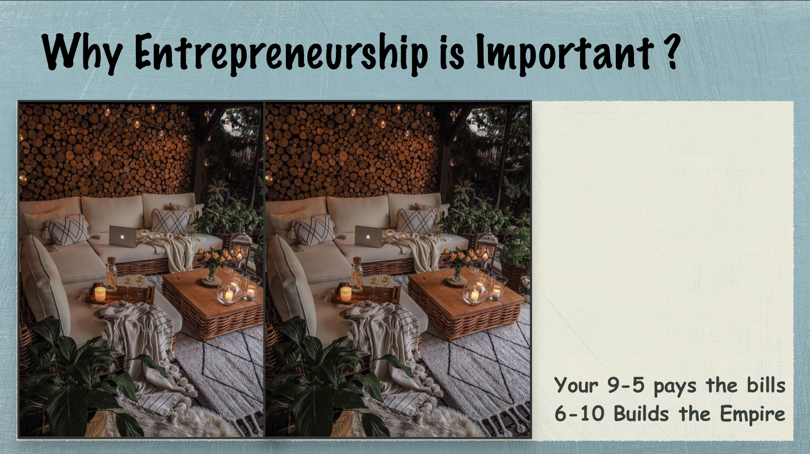
Your 9-5 pays the bills
6-10 Builds the Empire
Iska matlab hai ki entrepreneurship kyun zaroori hai? Aapka 9 se 5 wala job (regular job) toh bas aapke bills pay karta hai, matlab basic needs poori karta hai. Lekin agar aap 6 se 10 baje tak (extra time) apne business ya passion pe kaam karte ho, toh woh aapka empire banata hai—yani bada success, financial freedom, aur apna legacy. Entrepreneurship ka yeh magic hai ki yeh aapko chhoti si zindagi se nikal ke bada sochne aur banane ka mauka deta hai.
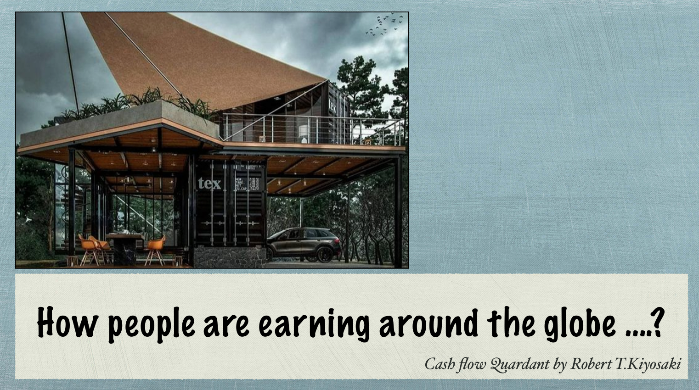
Cash flow Quadrant by Robert T.Kiyosaki
Image mein likha hai: "How people are earning around the globe ....?" aur neeche chhota sa text hai: "Cash flow Quadrant by Robert T.Kiyosaki". Upar ek photo hai jisme ek modern building dikh raha hai, jo shayad shipping containers se bana hai, aur uspe "tex" likha hai. Yeh building ek cafe ya office jaisa lagta hai, bahar chairs aur tables hain, aur ek car bhi dikh rahi hai.
Iska matlab yeh hai ki duniya bhar mein log kaise paisa kama rahe hain, aur yeh concept "Cashflow Quadrant" se samajhaya gaya hai, jo Robert T. Kiyosaki ki book ka idea hai. Cashflow Quadrant kehta hai ki paisa kamane ke 4 tareeke hote hain: Employee (E), Self-Employed (S), Business Owner (B), aur Investor (I). Image mein jo building hai, woh shayad ek business idea ko dikhata hai—jaise shipping containers se cafe ya office banana—jo ek tareeka hai Business Owner (B) banne ka. Yani, log apne unique ideas se business shuru karke paisa kama rahe hain, aur yeh quadrant aapko yeh samajhne mein help karta hai ki aap kis category mein ho aur kaise bade level pe ja sakte ho.
Image mein ek chart hai jo "Cashflow Quadrant" ko dikhata hai, jo Robert T. Kiyosaki ka concept hai. Yeh chart 4 categories mein divide karta hai: Employees, Self-employed, Business Owners, aur Investors.
L.H.Q. (Left Hand Quadrant): Yeh Employees aur Self-employed ke liye hai.
- Employees: 95% log yahan hote hain, lekin sirf 5% wealth inke paas hoti hai. Yeh log "How?" pe focus karte hain—matlab kaise kaam karna hai, salary ke liye kaam karte hain, money save karte hain, aur life by chance jeete hain. Inka mindset limitations ke baare mein sochta hai aur instant gratification chahiye hota hai.
- Self-employed: Yeh bhi L.H.Q. mein aate hain. Yeh log bhi active income pe depend karte hain, khud ka kaam karte hain (jaise tailor ya small shop owner), aur limitations ke baare mein sochte hain.
R.H.Q. (Right Hand Quadrant): Yeh Business Owners aur Investors ke liye hai.
- Business Owners: 5% log yahan hote hain, lekin 95% wealth inke paas hoti hai. Yeh log "Why?" pe focus karte hain—matlab kyun yeh kaam karna hai. Yeh life by choice jeete hain, money invest karte hain, aur possibilities ke baare mein sochte hain.
- Investors: Yeh log bhi R.H.Q. mein aate hain. Yeh money ko kaam pe lagate hain (passive income banate hain), net-worth pe baat karte hain, abundance ke baare mein sochte hain, aur delayed gratification pe believe karte hain.
Iska matlab yeh hai ki agar aap bada success aur wealth chahte ho, toh L.H.Q. se R.H.Q. mein move karna padta hai—yani employee ya self-employed se business owner ya investor banna padta hai. Yeh mindset ka change hai: "How?" se "Why?" pe focus karo, limitations ke bajaye possibilities socho, aur active income se passive income ki taraf jao.
Today I see a billion people as a billion potential consumers, an opportunity to generate value for them and make a return for myself.
- Mukesh Ambani
Iska matlab yeh hai ki success ka raaz bada vision (soch) rakhna hai. Mukesh Ambani kehte hain ki woh ek billion logon ko sirf log nahi, balki potential customers ke roop mein dekhte hain. Yeh ek mauka hai unke liye value create karne ka—jaise unki needs poori karna—aur usse apne liye profit kamane ka. Yani, bade entrepreneurs bade scale pe sochte hain: kaise zyada se zyada logon ki help kar sakte hain aur usse apna business grow kar sakte hain. Yeh vision hi unhe successful banata hai.
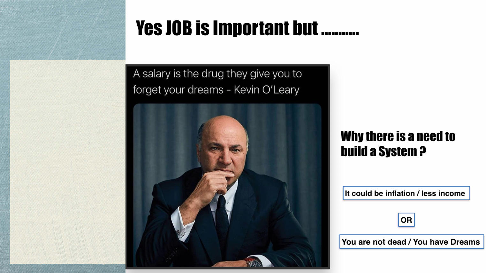
A salary is the drug they give you to forget your dreams - Kevin O'Leary
WHY there is a need to build a SYSTEM?
It could be inflation / less income
OR
You are not dead / You have Dreams
Iska matlab yeh hai ki job toh zaroori hai kyunki yeh aapko basic needs ke liye paisa deti hai, lekin yeh aapke sapnon ko bhula deti hai. Kevin O'Leary kehte hain ki salary ek tarah ka "drug" hai jo aapko apne bade dreams bhulne pe majboor kar deti hai, kyunki aapko lagta hai yeh paisa kaafi hai. Lekin yeh kaafi nahi hai kyunki: 1) Inflation ya kam income ki wajah se paisa kabhi bhi kaafi nahi hota, ya 2) Jab tak aap zinda ho aur aapke paas dreams hain, tab tak aapko rukna nahi chahiye. Isliye ek "system" banane ki zarurat hai—jaise apna business ya investment—jo aapko passive income de aur aapke dreams poore karne mein help kare, na ki sirf salary pe depend karo.
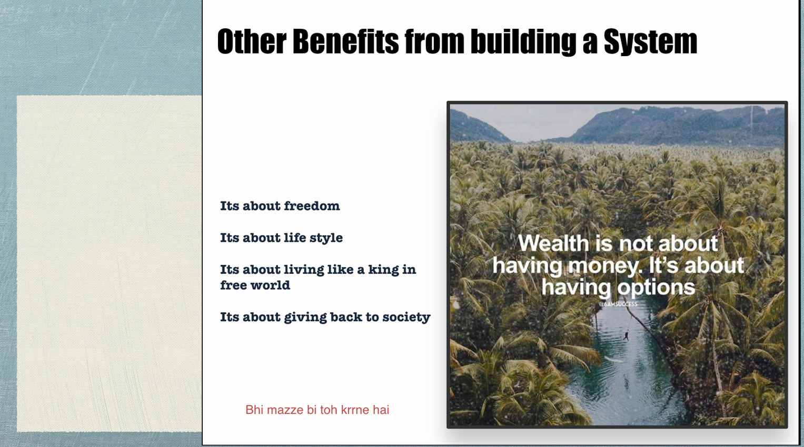Its about freedom
Its about life style
Its about living like a king in free world
Its about giving back to society
Bhi mazze bi toh krne hai
Wealth is not about having money. It's about having options
Iska matlab yeh hai ki ek system banane ke faayde sirf paisa kamane tak seemit nahi hain. System ka matlab hai aisa business ya income source jo aapko active kaam na karne pe bhi paisa deta rahe (jaise passive income). Yeh system aapko freedom deta hai—kaam ke pressure se azaadi, apni life apne style mein jeene ka mauka, duniya mein kahin bhi jaake ek king jaisi zindagi jeene ka chance, aur society ko kuch wapas dene ka mauka. Quote ke hisaab se asli wealth paisa nahi, balki options hona hai—jaise kahin bhi jaane ki azaadi, apni marzi se jeene ki azaadi. Hindi line "Bhi mazze bi toh krne hai" ka matlab hai ki life mein sirf kaam hi nahi, thoda enjoy bhi karna hai, aur yeh system banane se possible hota hai.
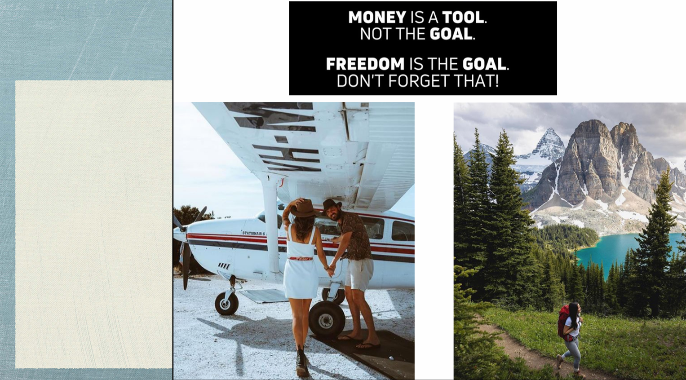

Iska matlab yeh hai ki paisa sirf ek tool hai—matlab ek zariya hai apne goals poore karne ka, lekin paisa khud goal nahi hona chahiye. Asli goal freedom hona chahiye—jaise apni life apni marzi se jeene ki azaadi, kahin bhi jaane ki azaadi, apne dreams poore karne ki azaadi. Photos yeh dikhati hain ki freedom ka matlab hai apni pasand ki life jeena—chahe woh travel karke plane mein ghoomna ho ya nature mein hiking karna ho. Yeh yaad rakhna zaroori hai ki paisa kamane ke chakkar mein freedom ko na bhool jao, kyunki asli khushi usi mein hai.
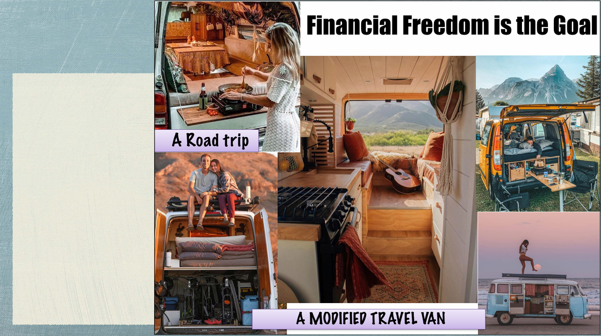
A Road trip


A Modified Travel Van
Iska matlab yeh hai ki financial freedom ka asli goal yeh hai ki aap apni life apni marzi se jee sako—jaise ek modified travel van mein road trip pe jana, kahin bhi ghoomna, aur apne style mein jeena. Financial freedom ka matlab hai aapko paison ki tension na ho, aur aap woh kar sako jo aapko khushi deta hai—jaise ghoomna, nature enjoy karna, ya apne passion ko follow karna. Yeh modified van ek example hai ki kaise financial freedom aapko aisi life jeene mein help karti hai—jahan aapko ek chhota sa ghar on wheels mil sakta hai, jisme aap kahin bhi jaake apni life enjoy kar sakte ho.
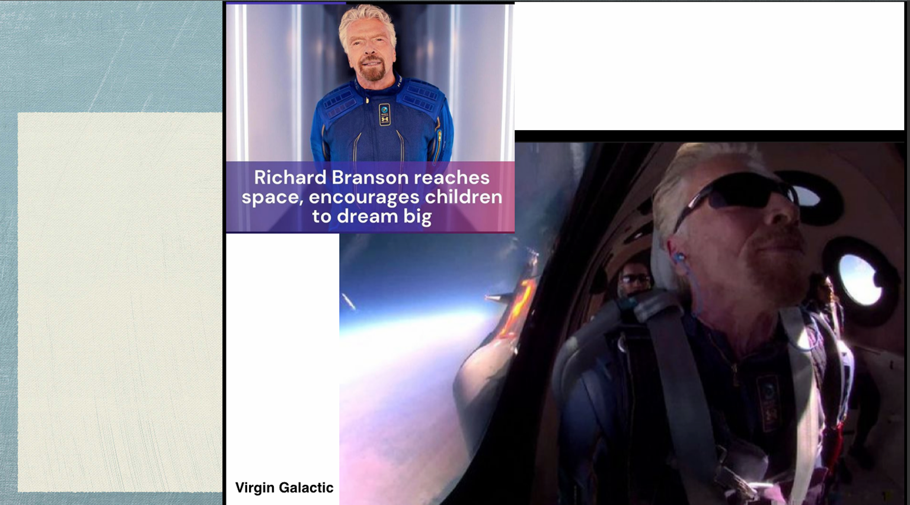
Virgin Galactic
Iska matlab yeh hai ki Richard Branson, jo ek famous entrepreneur hain, apne company Virgin Galactic ke through space mein gaye hain. Yeh ek bada achievement hai aur isse woh bacchon ko inspire kar rahe hain ki woh bhi bade sapne dekhein. Space travel jaise bade goals achieve karna dikhata hai ki agar aap bade sochoge aur mehnat karoge, toh kuch bhi possible hai. Virgin Galactic ek company hai jo space tourism pe kaam karti hai, aur yeh event dikhata hai ki kaise entrepreneurs apne vision se naye frontiers explore kar sakte hain aur dusron ko bhi motivate kar sakte hain.
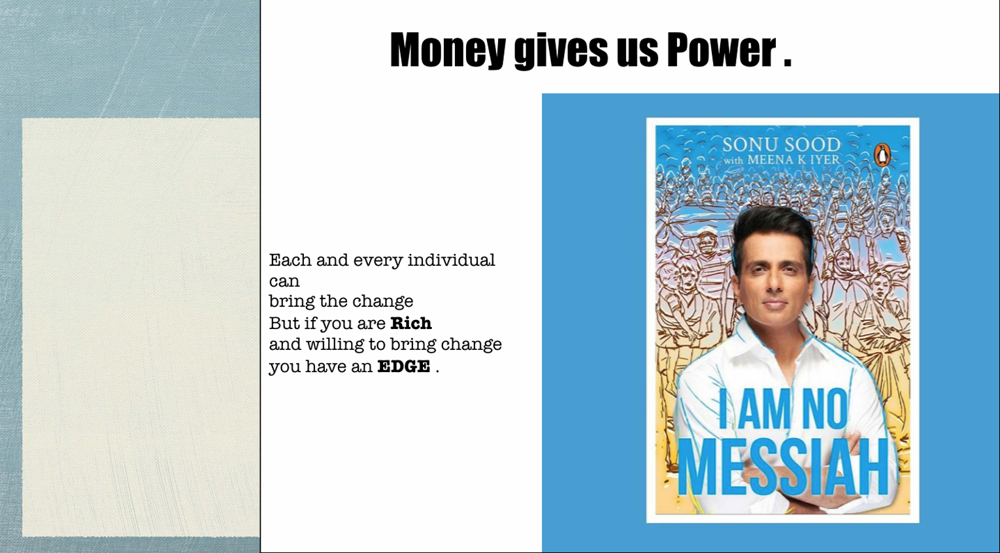
Each and every individual can bring the change
But if you are Rich and willing to bring change you have an EDGE.

Iska matlab yeh hai ki paisa aapko power deta hai—matlab aapke paas resources aur opportunities hoti hain jo aapko bada change laane mein help karti hain. Quote ke hisaab se, har koi change la sakta hai, lekin agar aap rich ho aur change laane ka passion rakhte ho, toh aapke paas ek "edge" hai—yani ek advantage, kyunki aapke paas zyada resources hote hain. Sonu Sood ki book "I Am No Messiah" se yeh message connect hota hai, kyunki unhone apne resources ka use karke COVID-19 ke time mein logon ki bahut help ki thi, aur yeh dikhata hai ki agar aapke paas paisa aur willingness hai, toh aap bada impact create kar sakte ho.
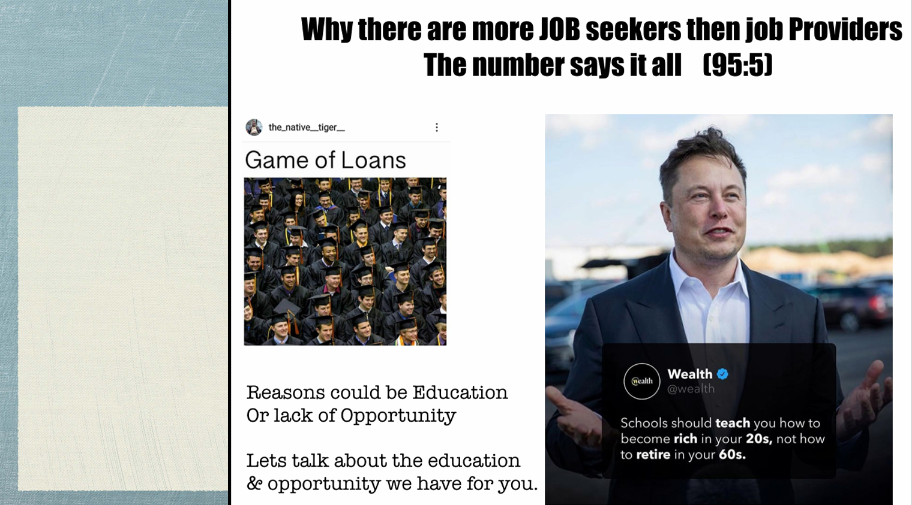
Entrepreneurship is about creating a life you love and having the freedom to live it - Amy Porterfield
Iska matlab yeh hai ki entrepreneurship aapko freedom deta hai—matlab aap apni life apne tareeke se jee sakte ho. Amy Porterfield ke quote ke hisaab se, entrepreneurship ka matlab hai aisi life banane ka chance jo aapko pasand ho, aur usse jeene ki azaadi. Photo mein ladki beach pe yoga kar rahi hai, jo yeh dikhata hai ki entrepreneurship se aap apni marzi se kahin bhi ja sakte ho, apna time manage kar sakte ho, aur apne passion ya hobbies (jaise yoga) ke liye waqt nikal sakte ho. Yeh freedom hi entrepreneurship ki sabse badi strength hai—job ke 9-5 routine se nikal ke apni life apne hisaab se jeena.
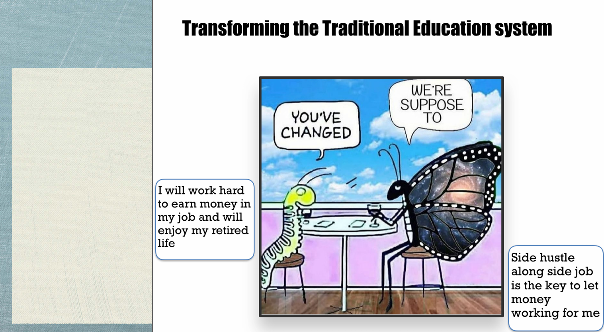
If you can solve a problem for people, you can build a business around it - Daymond John
Iska matlab yeh hai ki entrepreneurship ka asli matlab hai logon ki problems solve karna. Daymond John ke quote ke hisaab se, agar aap kisi ki problem ka solution de sakte ho—jaise unki life ko asaan banana ya koi need poori karna—to aap uske around ek business bana sakte ho. Photo mein ladka laptop pe kaam kar raha hai, jo yeh dikhata hai ki entrepreneurs apne ideas aur technology ka use karke logon ke liye solutions create karte hain. Yani, entrepreneurship ka mool idea yeh hai ki aap duniya mein koi value add karo, aur usse ek successful business ban jata hai.
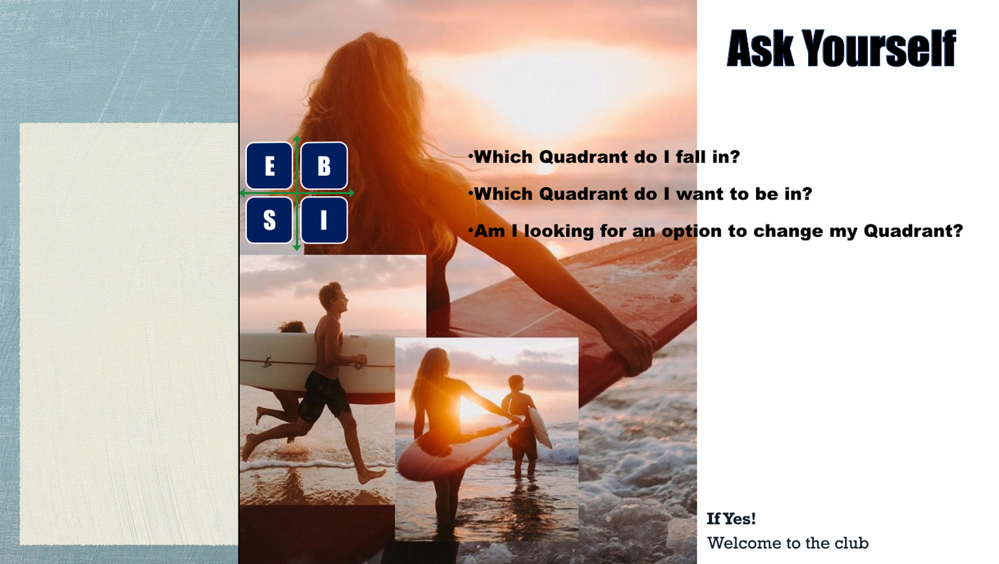
"Innovation distinguishes between a leader and a follower." - Steve Jobs
Iska matlab yeh hai ki naye ideas aur innovation hi ek leader ko banate hain. Steve Jobs ke quote ke hisaab se, jo log naye tareeke se sochte hain aur kuch alag karte hain, wahi successful hote hain. Photo mein ek team brainstorming kar raha hai, jo dikhata hai ki innovation ke liye teamwork aur creativity zaroori hai. Yani, agar aap leader banna chahte ho, toh hamesha naye solutions aur ideas pe kaam karo.
"Success is the result of hard work and dedication." - Colin Powell
Iska matlab hai ki mehnat talent se bhi badi cheez hai. Colin Powell ka yeh quote kehta hai ki success paane ke liye lagatar mehnat aur dedication chahiye. Photo mein ek insaan der raat tak kaam kar raha hai, jo yeh dikhata hai ki success ke liye sacrifice aur hard work zaroori hai. Yani, agar aap apne goals ke liye dil se mehnat karte ho, toh talent se bhi aage nikal sakte ho.
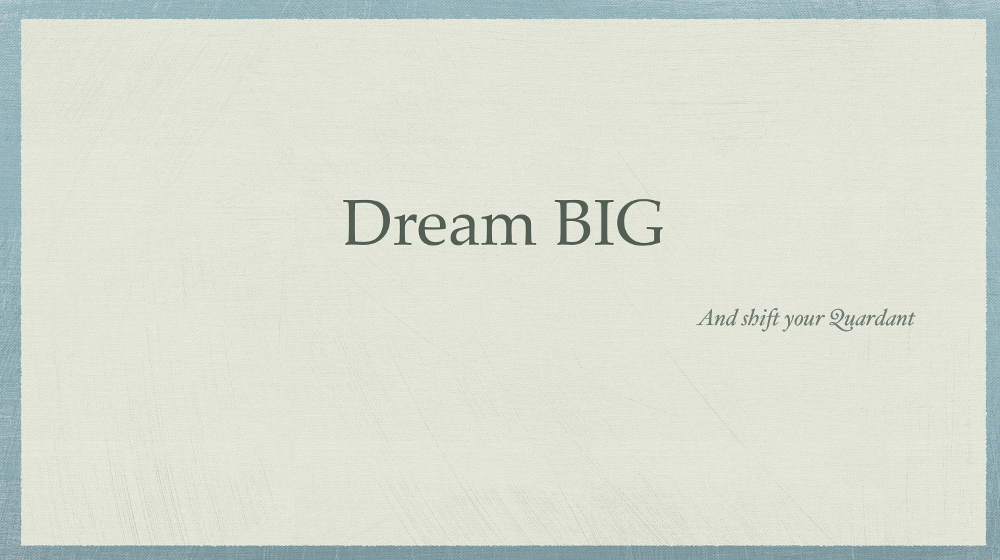